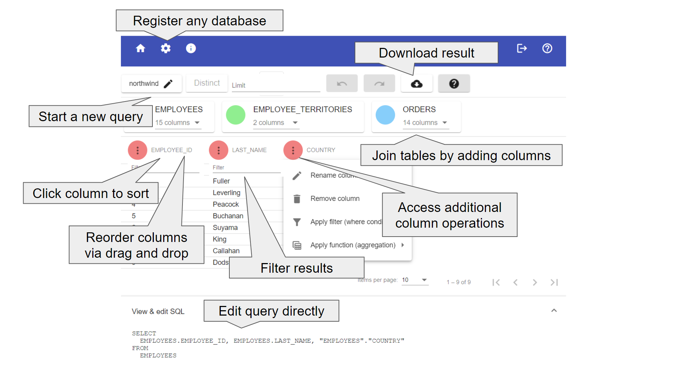

User Interface
This section explains all Dashjoin user interface pages in more detail.
Universal Database Frontend
Dashjoin offers an intuitive default visualization for any kind of data. Click here for a demo video. It features the following building blocks:
Default Visualization of Tables
Unless specified otherwise using the layout editor, all table pages show two elements. First, we have a sortable and pageable table showing the database table contents. Any primary or foreign key displays a link to the corresponding record page. Secord, the page shows a form for creating a new table record. The form is configured using the table metadata the system collected from the database. In case you are a system administrator, you will see two more widgets which are explained in the section on data definition operations below.
Default Visualization of Records
The record page also has two elements. First, there is a form allowing to update and delete the record. The form is almost identical to the create form on the table page. The only exception is that it is not allowed to change primary key columns. If you would like to do this, you need to delete and re-create the record using the new key. Second, the page has a widget showing links to the table page and all related records. Note that records are related if a key in the record points to another record or vice versa.
Search Page
Dashjoin offers a powerful search capability of the underlying databases. When you enter a search term in the toolbar, the search is federated to all registered databases and the result page shows the combined result using the following columns:
- a link to the actual record matching the search
- the name of the table the record is located in
- the name of the column that matched the search
- the matching column value
In order to boost performance, Dashjoin pushes down the search queries to the underlying databases if possible. Therefore, depending on the database, the search might match keywords slight differently:
- SQL databases perform a case insensitive contains operation (i.e. "My Test String" would match the search term "test")
- Firestore performs a case sensitive starts with operation (i.e. "My Test String" would match the search term "My" but not "test")
- The default implementation behaves like SQL
Data and Database Management
In Dashjoin, it is possible to register multiple databases. This section lists the supported management operations for these databases.
Database Dashboard
The database dashboard shows the databases known to the system and allows registering new databases. The table displays some core information about each database, the connection status as well as the number of tables detected. To register a new database, first select the database type. Depending on your choice, the respective connection options appear. Once you connect, Dashjoin will collect the database metadata and immediately make the new database ready for searches, queries, and browsing. The table also provides a link to the individual database. Use this page to change connection parameters. You can also simply press update to recollect the metadata. This is useful if the underlying schema was changed by another application. Deleting the database disconnects from the database and deletes the connection information. No data is deleted in the database.
On the page of a database instance, you can edit the connection parameters. Submitting the form will re-connect the database and pick up any schema changes that were performed by other applications.
You can also specify the roles that are allowed to read and write to the database. Note that by default, the admin role has access to all tables.
If you would like to exclude certain tables from being accessible via the platform, you can add their names in the excludeTables field in the database's JSON file in the model folder as follows:
Data Definition Operations
The database page offers a database management section. You can create a new table there. The new table will contain two columns:
- ID: a numeric primary key
- name: a generic string describing the record
The display table shows all database tables. You can delete tables there. Attention: this is a permanent operation that you have to confirm by typing "delete" into the dialog. Editing a table offers several options which are explained in the following sections. You can change the table name. This change is performed on the underlying database (e.g. a rename table operation on an SQL database).
Following the link to an individual table offers two sections in addition to the normal table display. The table metadata section simply makes the table operations (e.g. renaming a table) available from this page also. The column metadata allows creating, renaming, and deleting columns. Attention: deleting columns is a permanent operation and needs to be confirmed by typing "delete" in the dialog. Besides renaming columns, other options are available which are explained in the below.
Upload
The database management section also allows to upload data from multiple files to the current database. The following file extensions are supported:
| File | Extension | Table Name | Column Name | Suggested Data Type | Suggested Primary Key |
|---|---|---|---|---|---|
| Comma separated UFT-8 format as defined by RFC 4180 | .csv | File name before extension | First row | Guess by inspecting the data | First unique column |
| Microsoft Excel | .xlsx | Sheet name | First row | Guess by inspecting the data | First unique column |
| SQLite database | .sqlite | From database | From database | From database | First unique column |
| JSON table | .json | File name before extension | First row | Guess by inspecting the data | First unique column |
| Model folder upload to config DB | - | - | - | - | - |
The system allows you to choose multiple files and collects all tables and columns from them and displays a preview of all tables in tabs. The table above shows how the system determines table and column names as well as the primary key and column types. You cannot change the table and column names in this display. If you would like to change them, abort the process, change the source file, and repeat the upload process.
Depending on the tables to be uploaded, there are two modes. If one of the tables exists already, we enter the append / replace mode. This mode requires the structure of all tables to match the existing tables. You cannot pick column types or primary keys in this mode. You can then decide to append the data to the existing data or to replace the existing data. Attention, replacing the data will delete the data currently stored in these tables permanently. You therefore have to confirm this operation by entering "delete contents".
If none of the tables exist, we enter the create mode. The preview does allow changing the primary key and column types. The suggested values are guesses based on the data and must be double checked by the user.
Column Operations
The operations on columns can be grouped into two categories. First, changing the name and / or datatype results in the underlying database to be changed (i.e. using an alter column command on SQL databases).
Second, editing primary and foreign keys are changes on the metadata level only, since not all databases support these concepts. You can specify a column to be the primary key of the table. Note that the user interface does not support composite primary keys. A column can also be defined to be a foreign key by entering the corresponding linked primary key. Note that it is possible to define references not only within the same database but also to other databases. Setting foreign key references causes the foreign key column to display links to the related record and vice versa.
Table Label
Besides changing the table name, you can enter a label and triggers. The label defines how the system should display a record in the following scenarios:
- the browser page title when we are on a record of that table
- in the autocomplete dropdown when editing a foreign key field
- when displaying the label of a hyperlink pointing to the record
This feature is important when a table uses an artificial or non-descriptive primary key like a number or a UUID. By default, the system uses the key in the scenarios above, leading to unreadable and unintuitive displays. In this situation, the label can be changed to a template string with the template variable referencing other more descriptive record columns. For instance the table PERSON could define a label ${LAST_NAME} or even ${LAST_NAME}, ${FIRST_NAME} in order to display meaningful and user readable information rather than numbers or UUIDs.
In case of an M:N relationship, the label can be shown depending on where the link is being displayed. I.e. the page for M looks at the M:N and will only display N, and N looking at M:N will see M (this works as intuitively expected). The syntax for labels that need dereferencing is to prepend ''. To render a M:N you could use: {M} {*N} where M and N are attributes (columns) in the relationship (table).
Note that the user interface loads these template values in a lazy fashion whenever you visit a record page.
Table Triggers
Dashjoin offers create, update, and delete operations for each table. A trigger can be installed on each table that reacts before or after these operations, resulting is six trigger configurations. A trigger is an expression that is evaluated in the respective case. This following context is passed to the expression:
- command: one of create, update, or delete
- database: the database being modified
- table: the table being modified
- search: a map with the record's primary keys
- object: the record to the created or the fields to be updated
Please see the section on expressions for more details.
Table and Column Comment and Title
Dashjoin extracts the technical metadata from the databases. The editor allows you to add a comment for tables and columns in order to document the data model. The table title is used when displaying a link to the table. Likewise, column titles are used in CRUD forms and the show all records table columns.
Query Catalog and Editor
The query catalog allows you to save queries that are used by other parts of the application. Usually, these are chart and table widgets that display query results. The catalog allows you to manage queries in a central place, reuse them across the application and define important metadata about parameters and access control. Click here for a demo video.
Query Catalog Page
The query catalog page show a list of all defined queries as well as a form for entering a new query. The form has the following fields:
- ID: this is a unique identifier to reference the query (e.g. from a chart widget)
- type: queries can have type read and write indicating whether the running the query will make changes to the underlying database
- roles: defines which roles are allowed to run the query
- database: this field can only be written from the editor as shown below and defines which database is used in the query editor (note that the application can later run a query on other database with the same schema)
- arguments: queries can be parameterized using arguments (see the section below for more details)
- query: allows making manual edits to the query and offers to open the query editor dialog

Features
- Graphically build queries in an Excel-like fashion
- Add columns and join tables via point and click
- Reorder columns using drag & drop
- Apply where filters by simply adding them to the query result table
- Aggregate / group results right in the data table
- Rename columns
- Manual query edits are possible as well
- Download results as CSV
Supported Query Constructs
The editor supports a wide range of features of the query language, namely any kind of table join, aggregation and filter. It is possible to add advanced constructs such as a subquery or a call to a user defined function or stored procedure to the query by making changes in the lower text field. In this case, the query editor displays the query result but no longer allows making changes to the query via the UI controls. The reason for the controls being disabled is shown in a tool tip. You can return to the last supported query via the undo button.
Result Size
During the process of writing the query, we limit the results to 1000 rows. Use the limit text field to set an explicit query limit. Once, the limit is set, it overrides the default of 1000 result rows.
Query Parameters
The query catalog page allows defining query parameters. Each parameter consists of the following information:
- key: this is the parameter name that allows the query to reference the parameter using
${key} - type: defines the datatype of the parameter
- sample: this is the value that will be used in the query editor
Consider the following example that searches for persons with a certain name older than a given age:
This query has the string parameter p_name and the integer parameter p_age. In order to edit the query and display a result preview, we need to pluck in sample data. So we can define the samples:
This results in the following query that is used when editing the query. So in the edit dialog, the following query is used (note that the system automatically handles quotation of strings and dates):
Once the editor is closed, the samples are replaced with the template variables again. Note that this replacement is string based, so you should choose parameter names that do not "collide" with other parts of the query. Hence, we choose the prefix p_.
Graph Queries
Apart from managing traditional queries, the Dashjoin query catalog can also be used to store graph queries. There are different flavors of graph query languages. We orient ourselves at the OpenCypher language and the upcoming GQL Standard. Like queries on document and relational database, graph queries return a table where the columns represent the projection variables and each row contains variable values that match the query pattern / path.
The difference between the query types is that a graph query may return very different record types for a column / variable. Consider a graph query that returns all related records that are reachable with two hops from the starting record. Obviously, you will end up on very different records. In the northwind case, starting from an employee, these might be orders processed by the employee, the employee's boss's boss, and so on. Therefore, Dashjoin graph queries will make sure that apart from the raw data, the result also contains type information that can be used by the UI in order to interpret the values.
Graph queries can be run on a specific or on all databases. Dashjoin contains a partial OpenCypher implementation. Consider the following OpenCypher example (to learn OpenCypher, please refer to this interactive guide):
MATCH
path=(start:`dj/northwind/EMPLOYEES`)-[r1:REPORTS_TO]->(boss)-[r2:REPORTS_TO]->(finish)
RETURN
start._dj_resource, boss.LAST_NAME, finish._dj_resource, path"
This query traverses the recursive "reports to" relationship. The variables start, boss, and finish represent the graph nodes. As mentioned before, the engine adds the record metadata. i.e. which database and table / collection the record comes from. The path variable matches the entire traversal and contains all nodes and edges (relationships) that were traversed.
AQL and SPARQL Property Paths are alternative graph query languages that can be pushed down to the native database query engine if the query is run on the respective ArangoDB / RDF4J database. The Dashjoin drivers make sure that the query result has the same structure as a corresponding OpenCypher query.
Note that the graphical query editor does not yet support composing graph queries.
Pages Dashboard
While Dashjoin has a rich default page layout that is suitable for many use cases, every aspects of the display can be configured using the functionality described in this section.
The pages dashboard provides you with an overview of the available pages in the system. The first table shows the dashboards available in the system. This is a mix of system pages, which are explained in more detail in the next section, and pages created by the user via the "create a new page" form.
The page contains a link to widgets. This allows you to customize the sidebar and the toolbar. You can edit the those by visiting the page /config/widget/dj-toolbar or /config/widget/dj-sidenav. A typical use case would be to edit the roles that are required for an icon to appear. You can also add an icon pointing to your custom dashboard page. Since the dj-toolbar is shipped with the system, you can revert back to the original version by clicking delete on this page.
Finally, the layouts table provides an overview of all tables and whether the default layout is used or whether the user has customized the layout using the layout editor.
System Pages and Layouts
The system comes with a set of system pages (e.g. Home and Info) and some layouts for databases, tables, queries, etc. These layouts contain much of the functionality described in this reference guide.
System pages can be changed using the editor introduced below, however, a delete operation does not delete them altogether, but rather resets them to the "factory" state. This ensures that you cannot accidentally damage a system permanently using the editor.
Layout Editor
To activate the layout and form editor, press the pen symbol in the toolbar. You will remain on the page, but several controls will pop up on the screen. The pen symbol is replaced with three icons:
- Delete: deletes the page or resets the default table or record layout
- Save: saves the changes
- Abort: leaves the editor without saving
In the lower right screen corner you have the following controls:
- Undo / redo: undo an unwanted change
- Zoom: if you are editing a large page, you can zoom out to get a better overview or to drag elements from one end to the other
- Edit: when clicking on a widget, opens the widget editor on the bottom
- Move: displays arrows in each widget that move the mights in that direction. Alternatively, you can drag and frop widgets using the drag handle in the widget's upper right corner
- Resize: allows resizing widgets on a 12 column grid
The plus icon is shown at the bottom of the page as well as for each container that was added to the page. This allows you to create nested layouts. Pressing the plus icon opens a drawer on the left where you can select the widget to add.
Once you add a widget or select it for editing, the widget editor opens at the bottom of the page. You can enter texts, expressions, styles, icons etc.
For more information on the layout editor, you can refer to the React Page documentation.
Expression Editor
Expressions are used in various places throughout the platform. The next sections describe the different usage scenarios in more detail. Whenever an expression is to be edited on a form, Dashjoin allows you to do this via the expression editor component which is explained in this section.
The expression editor is a simple text field that shows context sensitive help and a result preview once you start typing.
As an example, you can navigate to the info page, enter the page edit mode and edit the user display widget. The widget displays the result of the following expression which projects the user field from the page context (the composition of the context is explained in the next section):
If you delete the closing curly bracket, the system will tell you that the expression is invalid: line 1:13: missing '}'. Now enter the following expression that calls the built-in read:
The system will tell you about missing parameters: Arguments required: $read(database, table, pk1). Now change the expression to:
Assuming you have the demo application installed, this will show the first 10 lines of JSON that contain the respective record in the employees table of the northwind database. Finally, setting the expression to
displays the entire page context.
Function Page
The function page works a lot like the database page. It shows a table of the functions that have been created on the system. To create a new function, you first need to select the function type. Depending on your choice, you can enter the respective configuration parameters. The function type specifies whether the function is read only or whether it has side effects like sending email or writing data. Finally, the roles specify which user role is allowed to run the function. Functions define extract load transform operations that load data into one of the databases, email endpoints, or access the RESTful web services.
Apart from creating and editing functions, you can also run the functions from the function page. Note that functions will be called without any parameters. If you would like to run functions with parameters, use the JSONata Notebook. Please refer to the developer reference chapter for a detailed listing of all supported functions.
General Information Page
This page contains some basic information about the platform version and installation parameters. At the top of the page, you find some important links that are grouped into the following four categories:
User Information
This section shows the user name, email, and roles. In addition, you can find links to the roles and tenant users tables. These are used for configuring roles and access control. For details, please consult the section security and access control.
App
The app section contains links to the following pages:
- Expert mode: this link opens the expert mode in a new window. This mode allows writing your own widgets using third party JavaScript libraries
- App API: This page allows you to use Dashjoin to implement an existing OpenAPI spec, publish schemas and paths to your OpenAPI spec, and generate an OpenAPI spec for your Dashjoin app
- Notebook: this is an area that works much like a jupyter notebook. You can conveniently experiment with JSONata there
- Git: this page provides a lightweight way to manage version control of your app. For more information please refer to the section development / production
Configuration
This section provides links to the system configuration. You can define certain user interface customizations there, configure database search parameters, and define some other system settings.
The configuration database is a built-in database that defines queries, function, registered databases, etc. Every role defined in the system must have read-only access to the configuration database. On this page, you can define which roles have access to which system tables and you can upload system tables (e.g. for importing users).
Databases
The databases section shows a link to the query performance table. This table helps you to identify performance problems in your app. The ER diagram is a convenient way of visualizing your database schemata.